Knowledge
Ground the system in what your organization actually knows.

Talk to us ↗Enterprise intelligence, engineered differently
Turn policies, procedures, expertise and operational data into intelligence that can reason, decide and execute — with the evidence to explain why.
A different kind of AI company
Enterprise AI should not merely sound plausible. It should know what governs a decision, show how it reached the answer and stay inside the boundaries you define.
Mellivo is built around that standard.
01 — Platform
Ground the system in what your organization actually knows.
Evaluate context against rules, evidence and expert logic.
Produce an outcome with explicit rationale and review.
Put approved decisions into motion safely.
move across the system to inspect the reasoning path_02 — Reasoning
For work where “probably right” is not a useful standard. Context, constraints and authoritative knowledge stay in the loop.
Decisions are designed to be traced, reviewed and understood by the people accountable for them.
Human oversight, policy controls and boundaries are core architecture — not an afterthought.
03 — Built for consequence
High-context environments have rules, exceptions, institutional memory and accountability. That is where Mellivo belongs.
04 — Why Mellivo
Our name comes from Mellivora capensis — the honey badger. Not the biggest predator in the room. Just famously unconcerned by the size of what stands in front of it.
Small enough to move fast.
Stubborn enough to finish.
Intelligent enough to pick the right fight.
THE MELLIVO STANDARD
05 — Start a conversation
If your organization has knowledge it relies on, decisions it repeats and consequences it cannot ignore, we should talk.
hi@mellivo.ai ↗